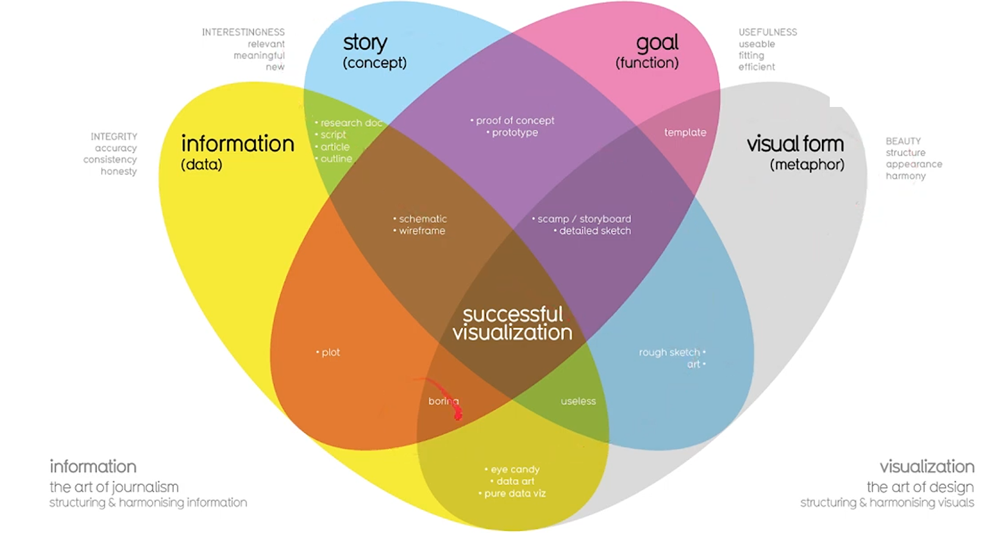
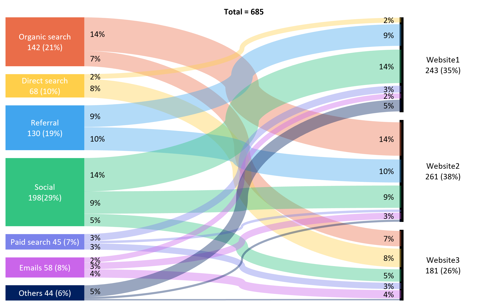

Ciencia de Datos
Apunte de Ciencia de Datos (FIUBA, cátedra Martinelli): de pandas y las visualizaciones a los modelos supervisados, clustering, NLP y la IA generativa, con las fórmulas y las trampas típicas de los parciales.
Qué es Ciencia de Datos
Antes de meterse en Pandas o en redes neuronales conviene tener el mapa: qué es la ciencia de datos, qué perfiles trabajan con datos y qué cambia cuando el volumen crece hasta volverse Big Data. Este capítulo presenta la definición de la disciplina como intersección de tres patas, las 6 V que caracterizan al Big Data y sus herramientas (warehouse, lakehouse, arquitecturas lambda), y cierra con el plan de la materia: cuatro ejes y la división del machine learning en supervisado y no supervisado.
Perfiles de datos
| Perfil | Qué hace |
|---|---|
| Data Analyst | Obtiene y analiza información; crea métricas |
| Data Scientist | Modeliza la información; realiza análisis exploratorio |
| Machine Learning Engineer | Procesa grandes volúmenes de datos; lleva modelos a producción |
Big Data
Nuevas herramientas
| Herramienta | Esquema de datos | Procesamiento |
|---|---|---|
| Data Warehouse | Esquema fijo | ETL (se transforma antes de cargar) |
| Data Lakehouse | Esquema NO fijo | ELT (transformación al ser necesitados) |
| Arquitecturas Lambda | No aplica | Lotes (batch) + streaming en tiempo real |
Las 6 V
| V | Qué mide |
|---|---|
| Volumen | Cantidad de datos |
| Velocidad | Ritmo al que llegan y hay que procesarlos |
| Variedad | Fuentes |
| Veracidad | Confiabilidad |
| Valencia | Conectividad |
| Valor | Lo que se puede extraer |
Cómo está organizada la materia
El material se divide en cuatro ejes, y este apunte respeta ese corte:
- Manejo de datos: el objetivo del análisis exploratorio es entender cómo se relacionan y se conforman los datos antes de trabajar con ellos. Desconocer el contexto lleva a conclusiones erróneas, y por el volumen es imposible revisarlos a mano. Capítulos: Pandas, Visualizaciones, Map-Reduce y Spark.
- Machine Learning: permite a los sistemas aprender de los datos para predecir o tomar decisiones. Capítulos: Modelos supervisados, Redes neuronales, Clustering.
- Transformación avanzada: capítulos: Compresión de datos, Natural Language Processing, Reducción de dimensiones.
- IA generativa: capítulos: Consideraciones prácticas y éticas, Textos y RAG, Imágenes y difusión.
Las dos ramas del Machine Learning
Pandas
Antes de cualquier modelo hay que poder mirar y manipular los datos, y en la materia eso se hace con pandas. Este capítulo presenta las dos estructuras centrales (DataFrame y Series) y organiza las operaciones en grupos: atributos, indexamiento, funciones, manipulación de labels, estadísticas, ordenamiento y reshape, y combinación. El foco está en saber para qué sirve cada operación y en distinguir las parejas que se confunden: apply vs map, agg vs transform, pivot vs pivot_table, join vs merge.
- Tipo por defecto:
object, aunque pandas intenta inferir el tipo de dato de la columna. - Series: listas indexables, con comportamiento similar a los
dataframes. Una columna de un DataFrame es una Series.
Atributos y datos subyacentes
| Operación | Qué devuelve |
|---|---|
index | Índices del dataframe |
columns | Columnas del dataframe |
dtypes | Tipos de las columnas del dataframe |
info() | Para cada columna: su tipo y cantidad de valores no nulos |
size | fil * col |
shape | (fil, col) |
Indexamiento e iteración
| Operación | Qué hace |
|---|---|
head(n) | Devuelve las primeras n filas |
loc[] | Accede a un grupo de filas y columnas por label: df.loc[<fil>, <col>] o df.loc[<cond>] |
df[cols] | Selecciona columnas |
df[cond] | Selecciona las filas que cumplan con la condición |
Funciones
| Operación | Qué hace |
|---|---|
add, sub, mul, div, mod, pow | Aritmética elemento a elemento |
apply() | Aplica una función a lo largo de un eje. Lo más común: ejecutar funciones accediendo a múltiples columnas de una fila |
map() | Aplica una función sobre una columna. Más óptimo para transformaciones simples |
agg() | Aplica una o varias funciones de agregación sobre un eje |
transform() | Aplica una función a cada grupo o elemento manteniendo el mismo tamaño que el original (groupby sin reducir tamaño) |
groupby() | Agrupa filas según criterio sobre columnas específicas, aplicando funciones de agregación |
apply() vs map(): map() trabaja sobre una columna y es más eficiente para transformaciones simples; apply() sirve cuando la función necesita varias columnas de la misma fila.agg() vs transform(): agg() reduce (un valor por grupo); transform() no reduce: devuelve un resultado del mismo tamaño que el original, alineado fila a fila.Manipulación de labels
| Operación | Qué hace |
|---|---|
drop() | Elimina labels o columnas específicas |
filter() | Filtra por una condición, permitiendo usar expresiones regulares |
reset_index() | Restablece el índice del dataframe por sus valores por defecto |
set_index() | Establece 1+ columnas como índice del dataframe |
Estadísticas
| Operación | Qué devuelve |
|---|---|
corr() / cov() | Matriz de correlación / covarianza entre variables numéricas |
count() | Conteo de celdas no nulas para cada columna |
describe() | Estadísticas descriptivas de las columnas numéricas |
nunique() | Cantidad de valores únicos |
value_counts() | Frecuencia de cada valor único |
Ordenamiento y reshape
| Operación | Qué hace |
|---|---|
droplevel() | Elimina índice o nivel de la columna |
pivot() | Define nuevo dataframe seleccionando índices, columnas y valores |
pivot_table() | Lo mismo que pivot, pero permite además aplicar una función de agregación + groupby |
sort_values() / sort_index() | Ordena el dataframe |
nlargest() / nsmallest() | Muestras ordenadas según lo solicitado |
stack() | Columna a índice |
unstack() | Índice a columna |
T | Transpone el dataframe |
Combinación
| Operación | Qué hace |
|---|---|
assign() | Define nuevas columnas |
join() | Combina dataframes usando índices como clave |
merge() | Combina dataframes con las uniones indicadas (como JOIN en SQL) |
join() usa los índices; merge() permite elegir columnas y tipo de unión (inner, left, right, outer), igual que SQL. Es la diferencia que más se pregunta.apply vs map, agg vs transform, pivot vs pivot_table, join vs merge, stack vs unstack. Y que el tipo por defecto es object pero pandas intenta inferir.Visualizaciones
Visualizar no es decorar: una buena visualización combina datos, historia, objetivo y metáfora visual, y si falta alguno de los cuatro el resultado se cae. Este capítulo define qué hace exitosa a una visualización y recorre el catálogo de gráficos agrupados según el tipo de dato que muestran: distribuciones continuas y discretas, relaciones entre variables, series de tiempo y algunos extras. La habilidad central es elegir el gráfico correcto para cada tipo de dato.
| Elemento | En el diagrama del apunte | Qué aporta |
|---|---|---|
| Datos | information (data) | Integridad: exactitud, consistencia, honestidad |
| Historia | story (concept) | Interés: relevante, significativo, nuevo |
| Objetivo | goal (function) | Utilidad: usable, adecuado, eficiente |
| Metáfora visual | visual form (metaphor) | Belleza: estructura, apariencia, armonía |

La visualización debe
- Ser explicable por sí misma
- Interesante
- Clara
- Con buena selección de colores
Plots
Objetivo y datos bien definidos, con metáforas simples. El apunte agrupa los gráficos según qué tipo de dato se quiere mostrar.
| Familia | Gráficos | Cuándo usarlo |
|---|---|---|
| Distribución continua | Box plot, violin plot | Ver la forma, el rango y los outliers de una variable numérica, comparando entre grupos |
| Distribución discreta | Pie chart, stacked bar chart | Composición: cómo se reparte un total entre categorías |
| De relación | Scatter plot (continua vs continua), heatmap (discreta vs discreta vs continua) | Ver cómo se relacionan dos (o tres) variables entre sí |
| Series de tiempo | Line plot, lollipop plot | Evolución de una magnitud a lo largo del tiempo |
| Extras | Sankey plot, Venn diagram, word cloud, radar chart | Flujos, intersecciones de conjuntos, frecuencia de términos y perfiles multi-atributo |
Pasá el mouse por cualquier elemento de los gráficos de acá abajo para ver el valor exacto.
Distribución continua
Distribución discreta
De relación
Series de tiempo
Extras

Map-Reduce y Spark
Cuando los datos no entran en una sola máquina, el cómputo se reparte entre los nodos de un cluster. Map-Reduce es el modelo de programación que hace eso escalable: un map que se paraleliza registro a registro, un shuffle & sort que junta las claves iguales (la etapa más costosa) y un reduce que combina. Apache Spark implementa la idea con un driver que define tareas y ejecutores que trabajan sobre RDDs particionados. La distinción central del capítulo, y la más preguntada, es transformación (lazy, devuelve RDD) contra acción (dispara la ejecución, devuelve un valor al driver).
Map
Recibe un par de claves (k, v) y devuelve pares intermedios (k', v'). Al aplicarse registro a registro, puede ser paralelizada y distribuida entre los distintos nodos.
Reduce
Combina los valores asociados a una misma clave de los resultados intermedios del map. La función aplicada debe ser conmutativa y asociativa.
Apache Spark
Transformaciones
map()filter()flatMap()reduceByKey()groupByKey()distinct()
Acciones
count()take(n)collect()first()takeOrdered(n, f)sample(withReplacement, fraction)reduce(f)countByKey()
Operaciones de conjunto
union()intersection()join()substract()broadcast join
Transformaciones sobre particiones
glom()mapPartitions(f)repartition(n)coalesce(n)repartitionAndSortWithinPartitions()
Persistencia y caché
cache()saveAsTextFile()saveAsPickleFile()
Modelos supervisados
Un modelo supervisado aprende de un set de datos con observaciones y features para predecir un valor conocido. Este capítulo arma el circuito completo: cómo se mide la performance (métricas de clasificación y de regresión), cómo se evalúa sin hacer trampa (split de entrenamiento y prueba, time travelling), cómo se ajustan parámetros e hiperparámetros, y cómo se diagnostica un modelo con bias y varianza. Cierra con las técnicas de mejora (ensambles por bagging y boosting, feature engineering) y una comparación de los modelos clásicos, de KNN a XGBoost.
Estructura
Los modelos cuentan con un set de datos compuesto por filas (observaciones) y columnas (features), que son la base para hacer predicciones. Las features se construyen a partir de feature engineering.
Performance
Para evaluar un modelo se debe definir una métrica y un conjunto de datos sobre el cual evaluarlo. La métrica define qué tan bien le va a un modelo, comparando la predicción del modelo con el valor real.
Métricas y errores
Para clasificación binaria:
- Accuracy: cantidad de predicciones correctas sobre el total de predicciones.
- Precisión: predicciones de la clase i correctas sobre el total de predicciones de la clase i.
- Recall: predicciones de la clase i correctas sobre el total de observaciones que realmente son de la clase i.
- AUC-ROC: probabilidad de que, dados dos puntos cualesquiera (uno de clase 0 y otro de clase 1), la probabilidad del de clase 1 sea mayor a la del de clase 0.
Para regresión:
- Mean Absolute Error (MAE)
- Mean Squared Error (MSE)
La métrica que se seleccione como función objetivo es la que el modelo intentará minimizar.
Evaluación
La evaluación del modelo no se hace sobre el dataset completo: se divide el set en uno de entrenamiento (training set) y uno para la evaluación (testing set).
- Generalmente se separa 80/20.
- Se busca mantener la misma distribución de datos que se encontrará en producción (aplicar over-sampling o under-sampling).
- Si se trabaja con variables dependientes del tiempo, es importante ordenar el dataset y no hacer time travelling.
Retroalimentación
El modelo realiza distintas iteraciones para mejorar la métrica de error en el dataset de evaluación. Para eso ajusta sus parámetros internos, que son los que definen al modelo entrenado. Otros ajustes que se pueden modificar son los hiperparámetros, que definen cómo se va a optimizar y comportar el modelo durante la optimización.
Búsqueda de hiperparámetros
| Técnica | Cómo funciona |
|---|---|
| Grid Search | Grilla de valores por cada hiperparámetro |
| Random Search | Define un conjunto de valores posibles para cada hiperparámetro y prueba combinaciones al azar |
| Optimización bayesiana | Distribución de probabilidades para cada hiperparámetro que el modelo va ajustando en cada iteración |
| Cross-Validation | Arma k particiones del set de entrenamiento para ir usando como evaluación intermedia. LOOCV es el caso especial donde cada partición tiene una sola observación |
Comportamientos
Underfitting vs overfitting
Bias y varianza
| Diagnóstico | Error en entrenamiento | Error en evaluación | Lectura |
|---|---|---|---|
| Alto bias | Alto | Alto | Underfitting: modelo muy simple |
| Alta varianza | Muy bajo | Muy alto | Overfitting: modelo sobreajustado |
Técnicas de mejora
Ensambles
Combinación de resultados
- Majority Voting: gana la clase más votada entre los modelos.
- Averaging: se promedian las predicciones.
- Blending / Stacking: utilizar los resultados de los modelos como features de otro.
Feature engineering
Familias de features:
- Estadísticos, de tiempo, de texto, basados en KNN y de completitud o ausencia.
- Transformaciones:
log,sqr,inv; normalización y estandarización; binning. - Codificación de variables categóricas: One-Hot Encoding, Binary Encoding y Mean Encoding (CV encoding, smoothing, ruido, expanding mean).
- De interacción: entre categóricos (concatenación más encoding, o encoding más aritmética), entre numéricos (aritmética) y entre múltiples features (árboles de decisión pequeños).
Ejemplos de modelos
| Modelo | Idea base | Tipo | Hiperparámetros clave | Ventajas | Desventajas |
|---|---|---|---|---|---|
| KNN | Predecir comparando a los vecinos más cercanos según métrica de distancia | Lazy | k: número de vecinos a evaluar; d: función de distancia entre observaciones; w: ponderación de vecinos | Fácil de entrenar; sin supuestos paramétricos fuertes; se adapta bien a problemas no lineales | Costoso para predecir; sensible a escala |
| Regresión lineal | Ajustar conjunto de puntos a una recta | Lineal | Factor de aprendizaje | Simple | Lineal |
| Regresión logística | Usar regresión lineal como probabilidad para predecir clase | Lineal | L1, L2, C | Interpretabilidad de coeficientes como logaritmos; entrenamiento rápido y robusto | Requiere aproximación lineal; no captura interacciones ni no linealidad |
| Árboles de decisión | Particiones en base a cortes en los atributos para predecir el valor en las hojas | No paramétrico, interpretable, apto para clasificación y regresión | max_depth, min_samples_leaf, min_sample_split |
Simples de entender; features numéricos o categóricos; no requieren normalización; buena performance; ayudan con la selección de features | Árbol óptimo NP-Completo; árboles muy complejos causan overfitting |
| Random Forest | Bagging sobre árboles de decisión, donde cada árbol tiene un subconjunto de atributos y un bootstrap del training set | Ensamble | Cantidad de árboles; cantidad de atributos por árbol | ||
| XGBoost | Boosting sobre árboles de decisión de manera greedy | Ensamble | Parámetros de regularización |
Redes neuronales
El modelo más flexible del apunte: neuronas que combinan pesos, sesgos y una función de activación, y que apiladas en capas pueden aproximar cualquier función continua. El capítulo arranca con la neurona y su fórmula f(wx + b), sigue con cómo aprende la red (back propagation y descenso por el gradiente estocástico) y con las técnicas de regularización. Cierra con las tres arquitecturas especializadas: recurrentes para series de tiempo, convolucionales para datos en cuadrícula y autoencoders para comprimir representaciones.
Estructura
Se compone por parámetros: elementos que el algoritmo debe optimizar.
- Pesos (w) y sesgos (b) internos de la red
- Hiperparámetros
- Función de pérdida
| Símbolo | Qué es |
|---|---|
| x | Entrada |
| w | Peso de la entrada |
| b | Sesgo |
| f | Función de activación |
Deep Learning
Back Propagation
Descenso por el gradiente estocástico (SGD)
Método iterativo de optimización. Se ejecuta epoch veces, en donde:
- Se mezclan todos los datos al azar
- Se arman lotes de datos de tamaño batch size
- Para un lote se calcula el gradiente del error con back propagation
- Se mueven los parámetros en dirección contraria al gradiente con módulo learning rate
- Seguir para el resto de los lotes
- Seguir por el resto de los epochs
| Hiperparámetro | Qué controla |
|---|---|
| Epoch | Cuántas veces se recorre todo el dataset |
| Batch size | Tamaño del lote sobre el que se calcula cada gradiente |
| Learning rate | Módulo del paso que se da en dirección contraria al gradiente |
Regularización
| Técnica | Qué hace |
|---|---|
| Small Batch Size | Menor lote, mayor varianza: ralentiza el entrenamiento y lo hace más estable |
| L1 (Lasso) | Agrega penalización por módulo de pesos (w) muy pesados |
| L2 (Ridge) | Lasso pero, en vez de módulo, cuadrado |
| Dropout | Apaga conexiones entre neuronas para evitar la sobredependencia de un feature o neurona |
| Early Stopping | Se corta el entrenamiento cuando el error en el validation set empieza a empeorar |
Redes Neuronales Recurrentes (RNNs)
Se utilizan principalmente para series de tiempo, en las que las redes neuronales clásicas requieren que los features se calculen manualmente a partir de datos históricos. Las RNNs infieren features de forma automática sobre las series de tiempo.
Estructura
- Muestreo: puntos discretos de la serie de tiempo a intervalos regulares
- Entrada y pesos: se toma la entrada ti con un peso U y se combina con una entrada recurrente del pasado multiplicada por un peso W. Suma estos valores y los aplica a una función de activación
- Memoria: la neurona mantiene una memoria, ajustándose a medida que la red aprende, que «resume» el pasado
- Salida final: función de activación aplicada a su estado actual por peso V
- Entrenamiento: generación de secuencia de estados
- U: peso de la entrada actual
- W: peso de la entrada recurrente (pasado)
- V: peso de la salida
Problemas
- Los pesos W, al encadenarse en la función final y estar elevados a una potencia muy alta, o desaparecen o explotan
- Se complica la retención de contexto a largo plazo
Nuevas arquitecturas
| Arquitectura | Qué aporta |
|---|---|
| LSTMs (Long Short-Term Memory) | Arquitectura compleja que hace que se olvide lo irrelevante y se retenga lo relevante |
| GRUs (Gated Recurrent Units) | Similar a LSTMs: más simple, más rápida, menos compuertas y menor tiempo de retención |
Redes Convolucionales (CNNs)
Procesamiento de datos con estructura de cuadrícula. Se utilizan filtros convolucionales para resolver el problema de representación de una imagen.
- Parámetros: coeficientes de la matriz del kernel
- Hiperparámetros: cantidad de filtros a usar, tamaño de los filtros, pasos y padding
Se alternan etapas de convolución y de pooling (max o avg).
Convolución sobre series de tiempo
Se puede utilizar una convolución sobre una serie de tiempo, con algunas ventajas sobre las RNNs:
- Cálculos paralelizables (no hay memoria interna recurrente)
- Más rápidos
- Cálculo de gradientes más sencillo
La salida es siempre una serie de tiempo, por lo que se puede volver a convolucionar o hacer pooling.
AutoEncoders
| Parte | Qué hace |
|---|---|
| Encoder | Toma la entrada x y la transforma en una representación compacta, de menor dimensión |
| Bottleneck | Capa intermedia con significativamente menos neuronas que las capas de entrada y salida. Obliga a la red a aprender una representación comprimida (con pérdida) de los datos |
| Decoder | Toma la representación compacta del bottleneck y la trata de reconstruir en la entrada original x |
Clustering
Primer capítulo de aprendizaje no supervisado: agrupar puntos en clusters sin conocer de antemano ni los grupos ni cuántos son. Recorre las cinco familias de algoritmos (jerárquico, K-Means con sus variantes ++ y online, espectral, DBScan y HDBScan) y la lógica que las encadena: cada algoritmo existe para resolver una falla del anterior. Cierra con un cuadro comparativo que resume criterio de agrupamiento, necesidad de fijar k, manejo de outliers y formas no lineales.
Clustering jerárquico
Generar una jerarquía de clusters uniendo en cada iteración los puntos más cercanos hasta llegar a un único grupo (o k grupos).
Funcionamiento
- Cada punto es un cluster individual.
- Se calculan las distancias entre todos los clusters.
- Se unen los dos clusters más cercanos, según el criterio de linkage:
- Single linkage
- Complete linkage
- Average linkage
- Median linkage
- Repetir.
Como resultado sale un dendograma.
K-Means
- Inicializar: se eligen k puntos iniciales al azar.
- Asignar: cada punto se asigna al centroide más cercano.
- Recalcular: se recalculan los centroides.
- Repetir: volver al paso 2 hasta converger.
El resultado es una división de los clusters a partir de líneas rectas: un diagrama de Voronoi.
K-Means++
Ataca el problema de la inicialización, eligiendo mejor los k puntos iniciales:
- Elige el primer centroide al azar.
- Para los siguientes, elige un punto con probabilidad proporcional a la distancia con el centroide: a mayor distancia, mayor probabilidad.
- Repetir hasta elegir los k centroides.
K-Means Online
Diseñado para trabajar con cantidades ilimitadas de puntos que llegan en forma de stream. El costo en memoria es de O(k).
- Se inicializan k centroides y un contador para cada cluster.
- Cuando llega un nuevo dato, se le asigna el centroide más cercano y se incrementa el contador de ese cluster.
- Se actualiza el centroide moviéndolo proporcionalmente hacia el nuevo punto. La proporción se ajusta según el contador.
Aplicaciones
- Compresión de imágenes: se agrupan los colores en k clusters.
- Reducción de dimensiones: se define a cada punto como las distancias a los k clusters.
Clustering espectral
Tiene como objetivo solucionar la incapacidad de K-Means de encontrar clusters con formas no lineales.
- Ejecutar Laplacian Eigenmaps (matriz L, autovalores, autovectores) reduciendo el espacio de dimensiones, en donde los clusters no lineales se vuelven más separables (ver C09).
- Aplicar K-Means sobre el resultado.
DBScan
Clusteriza a partir de la densidad. También es capaz de identificar y manejar outliers de forma explícita.
| Tipo de punto | Definición |
|---|---|
| Núcleo | Su vecindario ε tiene k puntos |
| Borde | No es núcleo, pero está en el vecindario de uno |
| Ruido | El resto |
HDBScan
Tiene como objetivo solucionar las fallas de DBScan: evitar definir un ε y lograr el manejo de clusters de densidades variables.
Funcionamiento
- Grafo con distancias de accesibilidad mutua como pesos.
- MST (árbol generador mínimo).
- Dendograma jerárquico.
- Se descarta el ruido si luego de un corte no cumple con el
min_cluster_size. - Extracción de clusters estables: un cluster es estable si su estabilidad (suma de diferencias de distancias entre nacimiento y caída por punto) es mayor a la suma de la de sus hijos.
Distancia de accesibilidad mutua
siendo corek(i) = d(i, vi) con vi el k-vecino más cercano a i. De esta forma se corrigen distancias para entender si los nodos están cerca unos de otros dentro del cluster.
Cuadro comparativo
| Algoritmo | Criterio de agrupamiento | Hay que fijar k | Maneja outliers | Formas no lineales |
|---|---|---|---|---|
| Jerárquico | Distancia entre clusters (linkage) | No (se corta el dendograma) | No explícitamente | Depende del linkage |
| K-Means | Distancia al centroide | Sí | No | No (fronteras rectas, Voronoi) |
| Espectral | Laplacian Eigenmaps + K-Means | Sí | Problemas con outliers | Sí (para eso existe) |
| DBScan | Densidad (vecindario ε) | No (se fija ε) | Sí, explícitamente | Sí |
| HDBScan | Densidad, jerárquico sobre accesibilidad mutua | No (ni ε) | Sí | Sí, con densidades variables |
Compresión de datos
Este capítulo arranca en la teoría de la información: cuántos bits cuesta comunicar un evento, la entropía de Shannon como promedio de esos bits y la entropía cruzada con su castigo, la divergencia de Kullback-Leibler. Con ese piso teórico recorre los cuatro métodos de compresión sin pérdida, de la reducción naive a la compresión aritmética. Cierra en el plano más abstracto: la complejidad de Kolmogorov (incomputable, pero aproximable con un compresor real vía NCD) y la inducción de Solomonoff, que junta a Epicuro, la navaja de Ockam y Bayes en una sola fórmula.
Teoría de la información
Se introduce el concepto de bits de información para entender cuánta información se comunica en un mensaje, más allá de la longitud del mismo. Los bits de información que se necesitan para comunicar un evento i se calculan como:
siendo P(i) la probabilidad de que suceda el hecho i. Con ajuste de Laplace:
Entropía de Shannon
Entropía cruzada
Se calcula la cantidad promedio de bits por cada mensaje, pero con un sistema de probabilidades (Q) distinto al calculado con los bits de información.
siendo DKL(P‖Q) la divergencia de Kullback-Leibler. Mide qué tan distintas son las predicciones de las probabilidades reales.
Compresión sin pérdida
| Método | Cómo codifica |
|---|---|
| Reducción naive | Usar todos los bits necesarios para codificar todos los elementos |
| Codificación simple | Asignar bits según la entropía de Shannon (redondeando para arriba) |
| Codificación de Huffman | Arma un árbol según la frecuencia de los caracteres, donde la codificación es un «mapa» para recorrer el árbol |
| Compresión aritmética | Usa números con coma y rangos decimales para representar varios caracteres dentro de un mismo número |
Complejidad de Kolmogorov
Propiedades
- Cotas: 0 ≤ K(x) ≤ len(x)
- Es incomputable
Distancia de Kolmogorov
Calcula qué tan distinto es el programa que genera x en comparación con el que genera y.
Su distancia normalizada divide por el máximo de las distancias:
Se aproxima con un compresor real, usando las longitudes de las cadenas comprimidas para estimar la distancia:
| Medida | Qué usa | ¿Calculable? |
|---|---|---|
| KD | K(x), complejidad de Kolmogorov | No (incomputable) |
| NKD | KD normalizada por max K | No |
| NCD | C(x), longitud según un compresor real | Sí: es la aproximación práctica |
Inducción de Solomonoff
| Principio | Qué dice |
|---|---|
| Principio de Epicuro | «Si más de una teoría es consistente con los datos observados, no descartar ninguna» |
| Navaja de Ockam | «Quedarse con la teoría más simple consistente con las observaciones» |
Procedimiento
- Recolectar evidencia en formato entrada → salida
- Iterar todos los programas posibles que predigan lo que estamos buscando. Si terminan, miramos su salida dada la entrada que buscábamos según el dato actual
- Actualizamos la probabilidad de que cada programa sea el que explique el fenómeno
- Repetir con datos nuevos
| Término | Qué significa |
|---|---|
| P(Hi | E) | Probabilidad de que el programa Hi explique la evidencia E |
| P(E | Hi) | Probabilidad de E dado el programa Hi. Si lo explicó (o sea, el programa es válido), vale 1 |
| P(Hi) | Probabilidad de que el programa Hi sea cierto = 2−K(Hi) |
| P(E) | Probabilidad de la evidencia E: suma de todos los Hi que explican E |
Natural Language Processing
Hasta acá los datos eran números y categorías; este capítulo trata el texto. Arranca por el preprocesamiento (tokenización, normalización, stop words) y recorre la escalera de representaciones: de vectores de 1/0 (BoW) a frecuencias (TF), frecuencias ponderadas por rareza (TF-IDF) y finalmente embeddings, donde la semántica de cada palabra sale de su contexto. Cierra con la familia de modelos que produce y procesa esos embeddings: Word2Vec, FastText, char embeddings y transformers.
Aplicaciones
- Análisis de sentimientos
- Extracción de tendencias
- Moderación de contenido
- Escritura automatizada
- Consultas rankeadas, recuperación de información
- Traducción
Preprocesamiento
| Paso | Qué hace |
|---|---|
| Tokenización | Partir el texto en unidades (tokens) |
| Normalización: stemming | Raíz de las palabras |
| Normalización: lemmatization | Lema de las palabras |
| Stop words removal | Eliminación de artículos y preposiciones |
Modelos de representación
Bag of Words (BoW)
- Se calculan las K palabras más comunes entre todos los documentos.
- Se genera un vector de dimensión K para cada documento, con un 1/0 según contenga o no cada palabra de las top K.
- La búsqueda se resume en comparar la consulta con los vectores de los documentos por similitud coseno.
donde ⟨A, B⟩ es el producto interno entre los dos vectores.
Term Frequency (TF)
BoW pero con frecuencias en el vector en vez de 1/0. Esto penaliza a los documentos largos con muchas repeticiones que no son idénticas a la consulta.
Term Frequency, Inverse Document Frequency (TF-IDF)
siendo N el total de documentos y Frec la cantidad de documentos en los que aparece la palabra. Si una palabra aparece en pocos documentos, su IDF será alto. El valor final en el vector es TF × IDF.
| Representación | Qué guarda el vector | Qué problema resuelve |
|---|---|---|
| BoW | 1/0: si la palabra está o no | Representación básica de un documento como vector |
| TF | Frecuencia de la palabra | Penaliza documentos largos con muchas repeticiones no idénticas a la consulta |
| TF-IDF | TF × IDF | Da más peso a las palabras raras (que aparecen en pocos documentos) y menos a las comunes |
Representaciones vectoriales
Word2Vec
Analiza la palabra por su contexto (window size). Tiene dos modos de entrenamiento:
Resultado: se acercan sinónimos y palabras relacionadas semánticamente, y se crean relaciones analógicas (rey, reina).
Procesamiento de embeddings
| Arquitectura | Cuándo conviene |
|---|---|
| RNNs | Sentimientos; dependencias secuenciales y temporales importantes |
| Convoluciones | Patrones locales; n-gramas |
FastText
Viene a solucionar el problema de las Out-Of-Vocabulary: palabras desconocidas por Word2Vec que se acumulan en un vector único. FastText analiza de a n-gramas de caracteres para entender la semántica de la palabra (ejemplo: palabras terminadas en -ar, -er, -ir las agrupa como verbo).
Char embedding
Análisis para cada carácter individual, donde una palabra es una secuencia de vectores de caracteres procesada con convoluciones.
Transformers
Arquitecturas de redes neuronales capaces de leer y devolver secuencias o un estado. Utilizadas en modelos de lenguaje.
| Modelo | Unidad que analiza | Problema que resuelve |
|---|---|---|
| Word2Vec | La palabra por su contexto (window size) | Semántica por contexto; sinónimos y analogías |
| FastText | n-gramas de caracteres | Out-Of-Vocabulary: palabras que Word2Vec no conoce |
| Char embedding | Cada carácter individual | Palabra como secuencia de caracteres, procesada con convoluciones |
| Transformers | Secuencias | Leer y devolver secuencias o un estado: base de los modelos de lenguaje |
Reducción de dimensiones
Los datasets reales suelen tener muchas más dimensiones de las que de verdad necesitan: la teoría de manifold dice que la dimensión real no coincide con la aparente. Este capítulo recorre los algoritmos para bajar de M a K dimensiones: los lineales (PCA y su equivalencia con SVD, MDS) y los no lineales (Laplacian Eigenmaps, t-SNE y UMAP), con las claves para leer un biplot y elegir cuántas componentes conservar. Cierra con un cuadro general que compara todos los métodos, la comparación t-SNE vs UMAP incluida, que es material fijo de final.
Motivaciones
- Visualización de datos
- Performance
- Esencia (teoría de manifold): las dimensiones reales no suelen ser iguales a las aparentes
- Algoritmos de reducción
SVD
Análisis de componentes principales (PCA)
Cálculo de las componentes principales
- Centrar los datos (restar el promedio) y dividir por la desviación estándar (opcional)
- Encontrar los autovectores de la matriz de covarianza de los datos
- Obtener las K componentes deseadas (ya ortogonales), ordenando autovectores según autovalores
Interpretación de gráficos
| Elemento | Cómo se lee |
|---|---|
| Biplot | Gráfico de puntos y de las dimensiones originales como vectores en el espacio reducido |
| Cercanía de dos puntos | Datos relacionados o similares |
| Cercanía de vectores originales (ejes) | Features correlacionados |
| Cercanía de un punto a un vector original | Punto importante para esa dimensión, bien explicado por ella |
| Limitación | A menor dimensión, la lejanía entre vectores es menos precisa |
| Método del codo | Quedarse con los K componentes principales según el método del codo |
Equivalencia con SVD
Con X centrada, SVD es igual a PCA. Las columnas de V son los autovectores de XTX, que son los componentes principales de PCA. En la práctica, PCA realiza internamente SVD, al ser numéricamente más estable y eficiente.
Multidimensional Scaling (MDS)
Utilizando una matriz de distancias B:
- Elevar B al cuadrado
- Centrar filas y columnas para que tengan promedio 0
- Calcular SVD. Las columnas de U dan las coordenadas de los puntos reducidos
Laplacian Eigenmaps (LE)
Cálculo de la matriz laplaciana (L):
siendo D la matriz de grados (diagonal, con el grado de cada nodo en su diagonal) y A la matriz de adyacencia.
Propiedades
- El autovalor más chico es siempre 0
- La multiplicidad del autovalor 0 indica el número de componentes conexas del grafo
- Se le puede asignar un valor a cada nodo del grafo con el autovector asociado al autovalor más chico, el que después de ordenar daría una manera de establecer el corte más disperso entre dos grupos
Funcionamiento
- Conecta cada dato original con sus vecinos más cercanos
- Transformar la matriz de adyacencia en matriz de pesos, calculando un kernel entre cada punto y sus vecinos
- Calcular la matriz laplaciana con la matriz ponderada
- Descomposición espectral, y tomar los K autovectores más chicos, ignorando el autovalor 0
- Asignar a nodos
t-SNE (t-Distributed Stochastic Neighbor Embedding)
Ataca la dificultad de PCA con estructuras no lineales o gradientes internos dentro de los clusters.
- Usa softmax para generar vectores de probabilidad cuya suma dé 1
- Usa la divergencia de Kullback-Leibler para medir la distancia entre dos distribuciones de probabilidad con el mismo dominio
Funcionamiento
- Define la disimilitud entre dos puntos, calculando la probabilidad de que dos puntos sean vecinos, dividida por un factor σi que actúa como radio en el que el punto i cuenta con k vecinos (perplexity)
- Se inicializan aleatoriamente los puntos del nuevo espacio de baja dimensión y se calculan las probabilidades de que los puntos sean vecinos
- Se busca que las probabilidades de la baja dimensión sean lo más similares posibles a las de la dimensión original, minimizándolas por descenso del gradiente
Mejoras sobre SNE
- Usa t-student en vez de distribución gaussiana, para resolver el crowding problem, donde puntos de alta dimensión alejados terminan en el centro del espacio de baja dimensión
- t-SNE promedia las probabilidades condicionales para hacerlas simétricas
Consecuencias
- Estocástico: depende de la inicialización aleatoria
- No extensible a nuevos puntos
- Costo computacional O(N²): conviene aplicar PCA/SVD antes para reducir dimensiones a un número manejable
- Bueno para visualización
UMAP (Uniform Manifold Approximation and Projection)
Comparación vs t-SNE
| Aspecto | t-SNE | UMAP |
|---|---|---|
| Nuevos puntos | No extensible | Usable en nuevos puntos |
| Velocidad y escala | O(N²) | Más rápido y escalable |
| Calidad de visualización | Buena | Mejor |
| Dimensión de salida | Pensado para 2-3D | Puede ser mayor a 3 dimensiones |
Cuadro general
| Algoritmo | Lineal / No lineal | En qué se basa |
|---|---|---|
| PCA | Lineal | Autovectores de la matriz de covarianza; maximiza varianza. Internamente usa SVD |
| MDS | Lineal | Matriz de distancias al cuadrado, centrada, más SVD |
| Laplacian Eigenmaps | No lineal | Grafo de vecinos → matriz laplaciana L = D − A → descomposición espectral |
| t-SNE | No lineal | Probabilidades de vecindad más divergencia KL, minimizadas por descenso del gradiente |
| UMAP | No lineal | Simplicial complex más fuerzas de repulsión |
| Autoencoder | No lineal | El encoder hasta el bottleneck (ver C05) |
IA generativa: práctica y ética
Cierre conceptual sobre el uso de modelos generativos: qué son realmente los LLMs y qué no son, cómo se los guía con prompting y cómo se los desvía con prompt injection. Después entra en el terreno espinoso: la censura y los sesgos que heredan del dataset, y el impacto social de liberar estos modelos (clonación de voces, fraude, la diferencia entre open y closed source). Es un capítulo corto y puramente conceptual, pero en el final se pierde por no enunciar la frase exacta.
Prompting en LLMs
- Completan texto según patrones: no razonan, generan la continuación más probable.
- Role-playing: asignarle un rol al modelo guía su comportamiento.
- Prompt injection: técnica para inducir comportamientos inesperados en el modelo.
Censura y sesgos
- Lo que no está en el dataset no se genera: de ahí vienen los sesgos.
- Censura explícita: puede desalentar usuarios.
- La tensión de fondo: enseñar a evitar algo implica mostrarlo primero.
Impacto social y ético
- Clonación de voces: con implicaciones para el fraude.
- Liberar modelos: es clave considerar el impacto antes de hacerlo.
- Open source vs. closed source: difieren en transparencia.
| Modelo | Transparencia |
|---|---|
| Open source | Más transparente: se puede auditar el modelo, sus datos y su comportamiento. |
| Closed source | No se puede inspeccionar lo que hay adentro ni con qué se entrenó. |
Textos y RAG
El último eslabón del apunte lleva la ciencia de datos al texto: los sentence transformers convierten oraciones en embeddings que capturan su significado semántico, y sobre esa representación se busca por similitud con una función de distancia. Con esa pieza se arma RAG (Retrieval Augmented Generation), la técnica que le acerca a un LLM información actualizada y específica sin reentrenarlo: se recuperan los chunks más relevantes de una base de datos vectorial y se inyectan en el prompt como contexto extendido. Es el tema que ata embeddings, bases vectoriales y LLMs en un solo circuito.
Sentence transformers
- División del texto en chunks: con Langchain (por caracteres) o con Stanza (por signos de puntuación).
- Modelo sentence transformers: genera los embeddings para una dimensión determinada.
Consulta
La pregunta o consulta se transforma en su representación vectorial, y a partir de una función de distancia se mide qué tan parecida es la pregunta a los vectores de texto guardados. El sistema devuelve los chunks más similares a la pregunta, ordenados por relevancia.
Retrieval Augmented Generation (RAG)
Problemas que resuelve
- Costo del fine-tuning
- Información desactualizada
- Alucinaciones y errores
Funcionamiento
- Se crea y mantiene una base de datos vectorial donde se guarda la información relevante (por ejemplo, transcripciones de videos o documentos PDF).
- Cuando un usuario hace una pregunta, esta se convierte en un vector usando el mismo modelo de embedding.
- El vector de la pregunta se usa para buscar los documentos más relevantes y cercanos semánticamente.
- Los documentos recuperados se añaden a la pregunta original como contexto extendido, a estilo de prompt para el LLM. Este prompt también puede incluir instrucciones específicas para el modelo.
- El LLM interpreta este contexto adicional junto con la pregunta del usuario y genera una respuesta más precisa, actualizada y relevante.
Imágenes y difusión
La generación de imágenes pasó por varios intentos con problemas serios (mapeo directo, autoencoders, GANs) antes de llegar a los modelos de difusión, el estado del arte actual. Este capítulo recorre esa evolución con el problema de cada etapa y explica la idea central de la difusión: aprender a predecir y eliminar ruido de forma iterativa. Después desarma el text-to-image en sus piezas (CLIP, UNet y VAE) y cierra mostrando cómo el mismo esquema se extiende a música, video y 3D.
Modelos iniciales
| Modelo | Cómo funciona | Problema |
|---|---|---|
| Mapeo directo (prompt a imagen) | Se crea una imagen siguiendo las instrucciones del usuario | Siempre generaría la misma imagen promedio para un prompt |
| Autoencoders | Encoder + decoder. Algunos usan arquitectura decoder-only | Generaban imágenes deformes y poco realistas |
| GANs | Dos redes neuronales que compiten mutuamente en una especie de juego de suma cero. Aprendizaje no supervisado | Difíciles de entrenar y con resultados variables |
Modelos de difusión (estado del arte)
Para entrenar se parte de una imagen limpia y se le va agregando ruido de a poco, enseñando al modelo las modificaciones que se le hacen y qué impacto tienen. El objetivo es que el modelo aprenda las operaciones inversas para "limpiar" la imagen.
Generación condicional (text-to-image)
| Componente | Qué aporta |
|---|---|
| CLIP | Dos encoders (texto e imagen) que generan embeddings en el mismo espacio vectorial |
| UNet | Arquitectura de Stable Diffusion, con conexiones residuales y atención |
| Costos computacionales | Muy elevados por resolución y complejidad |
| VAE (Variational Autoencoder) | Reduce la dimensión antes de difundir y luego decodifica |
Más allá de las imágenes
| Modalidad | Cómo se lleva al terreno de las imágenes |
|---|---|
| Música | Se convierte en espectrogramas (imágenes), que luego se pueden volver a convertir en audio |
| Video | Imágenes con dimensión temporal y movimiento de cámara codificado |
| 3D | Desde mapas de profundidad hasta reconstrucciones completas con vistas múltiples |
Machete y trampas típicas
El mínimo indispensable para aprobar el final: definiciones exactas, clasificaciones, comparaciones y fórmulas, sin relleno. Cada sección condensa un capítulo del apunte; el desarrollo completo, con ejemplos y diagramas, está en los capítulos anteriores. Al final, el machete con todas las fórmulas, los números que hay que saber de memoria y las comparaciones que caen sí o sí, y el cierre con las trampas típicas que más puntos hacen perder.
Cómo usar este repaso
- Ciencia de datos: rama de la computación enfocada en entender, procesar y extraer valor a partir de datos. Intersección de computación + matemática + dominio.
- Perfiles: Data Analyst (obtiene y analiza, crea métricas); Data Scientist (modeliza, análisis exploratorio); ML Engineer (grandes volúmenes, modelos a producción).
- Big Data: procesamiento de grandes volúmenes; los modelos tradicionales no aplican por el volumen y la velocidad.
- Las 6 V: Volumen, Velocidad, Variedad (fuentes), Veracidad (confiabilidad), Valencia (conectividad), Valor.
- ML supervisado vs. no supervisado: con labels (regresión, clasificación) vs. sin labels (anomalías, clustering).
| Herramienta Big Data | Esquema | Procesamiento |
|---|---|---|
| Data Warehouse | Fijo | ETL |
| Data Lakehouse | NO fijo | ELT (al ser necesitados) |
| Arquitecturas Lambda | No aplica | Batch + streaming en tiempo real |
Pandas
- DataFrame: tabla con filas, columnas e índices. Tipo por defecto
object, pandas intenta inferir. - Series: lista indexable, comportamiento similar al dataframe.
info()da tipo + cantidad de no nulos;size= fil x col;shape= (fil, col).loc[]accede por label;describe()da estadísticas de numéricas;value_counts()da la frecuencia de cada valor único.
| Par que se confunde | Diferencia exacta |
|---|---|
apply() vs. map() | apply = a lo largo de un eje, sirve para usar varias columnas de una fila. map = sobre una columna, más óptimo para transformaciones simples |
agg() vs. transform() | agg reduce (agregación). transform mantiene el mismo tamaño que el original |
pivot() vs. pivot_table() | pivot_table = pivot + función de agregación y groupby |
join() vs. merge() | join usa índices. merge usa las uniones indicadas, como SQL |
stack() vs. unstack() | stack = columna a índice. unstack = índice a columna |
Visualizaciones
- Debe ser explicable por sí misma, interesante, clara y con buena selección de colores.
| Si el dato es... | El gráfico es... |
|---|---|
| Distribución continua | Box plot, violin plot |
| Distribución discreta | Pie chart, stacked bar chart |
| Relación: continua vs. continua | Scatter plot |
| Relación: discreta vs. discreta vs. continua | Heatmap |
| Serie de tiempo | Line plot, lollipop plot |
| Extras | Sankey (flujos), Venn (conjuntos), word cloud (frecuencia de términos), radar (perfil multiatributo) |
Map-Reduce y Spark
- Map-Reduce: modelo de programación para el procesamiento distribuido de grandes volúmenes de forma escalable.
- Cluster: conjunto de computadoras que funcionan como sistema único. Nodo: cada computadora; produce resultados parciales.
- Map: recibe
(k,v)y devuelve(k',v'). Se aplica registro a registro, por eso es paralelizable. - Reduce: combina los valores de una misma clave. La función debe ser conmutativa y asociativa.
- Shuffle & Sort: mandar todos los resultados de una misma clave a un mismo nodo. Es la etapa más costosa.
- Spark: driver (define las tareas) + ejecutores (nodos) que devuelven resultados al driver. RDD: colección particionada y distribuida.
| Transformaciones | Acciones | |
|---|---|---|
| Qué hacen | Toman 1 o más RDDs y producen un nuevo RDD. Son lazy | Desencadenan la ejecución y devuelven un valor al driver |
| Ejemplos | map, filter, flatMap, reduceByKey, groupByKey, distinct | count, take(n), collect, first, takeOrdered, sample, reduce, countByKey |
- Conjunto:
union,intersection,join,subtract,broadcast join. - Particiones:
glom,mapPartitions,repartition(n),coalesce(n),repartitionAndSortWithinPartitions. - Persistencia:
cache,saveAsTextFile,saveAsPickleFile.
Modelos supervisados
- Dataset: filas = observaciones, columnas = features (se construyen con feature engineering).
- Métrica: compara la predicción con el valor real. La elegida como función objetivo es la que el modelo minimiza.
| Métrica | Definición |
|---|---|
| Accuracy | # predicciones correctas / # total |
| Precisión | # predi correctas / # predi totales |
| Recall | # predi correctas / # i totales |
| AUC-ROC | Probabilidad de que, dados dos puntos (uno clase 0 y otro clase 1), la probabilidad del de clase 1 sea mayor a la del de clase 0 |
| MAE / MSE | Regresión: error absoluto medio / error cuadrático medio |
- Evaluación: NO sobre el dataset completo. Split 80/20 train/test, manteniendo la distribución de producción (over/under-sampling). Con variables temporales: ordenar y no hacer time travelling.
- Parámetros = los aprende el modelo (definen al modelo entrenado). Hiperparámetros = definen cómo se optimiza y comporta.
- Búsqueda de hiperparámetros: Grid Search (grilla), Random Search (combinaciones al azar), optimización bayesiana (distribución que se ajusta por iteración), Cross-Validation (k particiones; LOOCV = una observación por partición).
| Error train | Error test | Se llama | |
|---|---|---|---|
| Alto BIAS | Muy alto | Alto | UNDERFITTING (modelo muy simple) |
| Alta VARIANZA | Muy bajo | Muy alto | OVERFITTING (sobreajustado) |
| Ensamble | Cómo entrena | Ejemplo |
|---|---|---|
| Bagging | Múltiples clasificadores independientes y en paralelo, cada uno con muestra aleatoria del mismo tamaño con reemplazo (bootstrap). Los que quedan afuera (Out-Of-Bag) sirven para evaluar | Random Forest |
| Boosting | Múltiples clasificadores secuenciales, cada uno corrige los errores del anterior | XGBoost (greedy) |
- Combinación de resultados: Majority Voting, Averaging, Blending/Stacking (resultados de unos modelos como features de otro).
- Feature engineering: estadísticos, de tiempo, de texto, basados en KNN, de completitud/ausencia, transformaciones (log/sqr/inv, normalización, binning), codificación de categóricas (One-Hot, Binary, Mean encoding) y de interacción.
| Modelo | Idea | Hiperparámetros | Punto débil |
|---|---|---|---|
| KNN (lazy) | Comparar a los vecinos más cercanos | k, d (distancia), w (ponderación) | Costoso para predecir, sensible a escala |
| Reg. lineal | Ajustar puntos a una recta | Factor de aprendizaje | Lineal |
| Reg. logística | Regresión lineal como probabilidad de clase | L1, L2, C | No captura interacciones ni no linealidad |
| Árbol de decisión | Cortes en los atributos, predice en las hojas | max_depth, min_samples_leaf, min_sample_split | Árbol óptimo NP-Completo; complejo lleva a overfitting |
| Random Forest | Bagging sobre árboles (subconjunto de atributos + bootstrap) | # trees, # atributos | No se señala |
| XGBoost | Boosting greedy sobre árboles | Regularización | No se señala |
Redes neuronales
- Parámetros: pesos (w) y sesgos (b), hiperparámetros, función de pérdida.
- Teorema de aproximación universal: toda función continua puede aproximarse con una red de al menos una capa oculta y activación NO lineal (tanh, sigmoide, ReLU).
- Deep learning: agrupar varias capas. Más óptimo que una única capa infinita.
- Back propagation: algoritmo que permite reajustar los parámetros para minimizar el error.
SGD (descenso por el gradiente estocástico), se ejecuta epoch veces:
- Mezclar los datos al azar.
- Armar lotes de tamaño batch size.
- Calcular el gradiente del error del lote con back propagation.
- Mover los parámetros en dirección contraria al gradiente con módulo learning rate.
- Seguir con el resto de los lotes.
- Seguir con el resto de los epochs.
| Regularización | Qué hace |
|---|---|
| Small batch size | Menor lote implica mayor varianza; ralentiza y estabiliza |
| L1 (Lasso) | Penaliza por módulo de los pesos |
| L2 (Ridge) | Penaliza por cuadrado de los pesos |
| Dropout | Apaga conexiones: evita sobredependencia de un feature o neurona |
| Early stopping | Cortar cuando el error del validation set empieza a empeorar |
- RNNs: para series de tiempo; infieren features automáticamente. Entrada ti con peso U + entrada recurrente del pasado con peso W; salida con peso V. Mantienen memoria que resume el pasado.
- Problema de las RNNs: los pesos W encadenados y elevados a potencia muy alta hacen que los gradientes desaparezcan o exploten; se complica la retención de contexto a largo plazo.
- LSTM: compleja, olvida lo irrelevante y retiene lo relevante. GRU: más simple, más rápida, menos compuertas, menor tiempo de retención.
- CNNs: datos con estructura de cuadrícula; kernel = matriz que se superpone. Parámetros: coeficientes de la matriz. Hiperparámetros: cantidad de filtros, tamaño, pasos, padding. Se alterna convolución y pooling (max o avg).
- CNN sobre series de tiempo (vs. RNN): paralelizable (no hay memoria recurrente), más rápida, gradientes más sencillos. La salida sigue siendo serie de tiempo.
- Autoencoder: encoder (comprime), bottleneck (menos neuronas: fuerza una representación comprimida con pérdida), decoder (reconstruye x). Entrenado, el encoder sirve para reducir dimensiones o resumir features.
Clustering
| Algoritmo | Cómo agrupa | Fijar k | Outliers | No lineal |
|---|---|---|---|---|
| Jerárquico | Une los 2 clusters más cercanos (single / complete / average / median linkage) y arma el dendograma | No | No | Depende |
| K-Means | Distancia al centroide; problema NP-Hard, se resuelve con heurística | Sí | No | No (Voronoi) |
| Espectral | Laplacian Eigenmaps + K-Means sobre el resultado | Sí | Problemas | Sí |
| DBScan | Densidad: vecindario ε | No (fija ε) | Sí, explícito | Sí |
| HDBScan | Densidad jerárquica sobre accesibilidad mutua | No (ni ε) | Sí | Sí, densidades variables |
- K-Means (pasos): elegir k puntos al azar, asignar cada punto al centroide más cercano, recalcular centroides, repetir hasta converger. Fronteras rectas = diagrama de Voronoi. k se elige con el método del codo.
- K-Means++: ataca la inicialización. Primer centroide al azar; los siguientes con probabilidad proporcional a la distancia (a mayor distancia, mayor probabilidad).
- K-Means Online: para streams ilimitados; memoria O(k). k centroides + un contador por cluster; cada dato nuevo mueve el centroide proporcionalmente según el contador.
- Aplicaciones de K-Means: compresión de imágenes (agrupar colores en k clusters) y reducción de dimensiones (cada punto = distancias a los k clusters).
- Clustering espectral: NO ESCALA BIEN y tiene problemas con outliers.
- DBScan, tipos de punto: núcleo (su vecindario ε tiene k puntos), borde (no es núcleo pero está en el vecindario de uno), ruido (el resto).
- HDBScan: grafo con distancias de accesibilidad mutua, MST, dendograma jerárquico, descartar ruido según
min_cluster_size, extraer clusters estables (estabilidad mayor a la suma de la de sus hijos).
Compresión de datos
- Intuición: a mayor probabilidad, se transmite menos información avisando el hecho, por lo tanto menos bits.
- Divergencia KL: mide qué tan distintas son las predicciones de las probabilidades reales.
| Compresión sin pérdida | Cómo codifica |
|---|---|
| Reducción naive | Todos los bits necesarios para codificar todos los elementos |
| Codificación simple | Bits según la entropía de Shannon (redondeando para arriba) |
| Huffman | Árbol según la frecuencia; la codificación es el mapa para recorrerlo |
| Aritmética | Números con coma y rangos decimales: varios caracteres en un mismo número |
- Complejidad de Kolmogorov K(x): cantidad mínima de bits de un programa que genere x. Cumple 0 ≤ K(x) ≤ len(x) y ES INCOMPUTABLE.
- Epicuro: si más de una teoría es consistente con los datos, no descartar ninguna. Navaja de Ockam: quedarse con la más simple consistente con las observaciones.
- Solomonoff: recolectar evidencia entrada, salida, iterar todos los programas posibles y actualizar por Bayes la probabilidad de cada uno.
Natural Language Processing
- NLP: lograr que las máquinas comprendan el lenguaje humano, escrito y hablado.
- Preprocesamiento: tokenización; normalización (stemming = raíz, lemmatization = lema); stop words removal (artículos y preposiciones).
| Representación | Vector | Qué resuelve |
|---|---|---|
| BoW | 1/0 sobre las K palabras más comunes | Documento como vector; se compara con coseno |
| TF | Frecuencias | Penaliza documentos largos con repeticiones no idénticas a la consulta |
| TF-IDF | TF × IDF | Palabra en pocos documentos implica IDF alto |
- Hipótesis distribucional: la semántica de una palabra está dada por el contexto en el que aparece.
- Word2Vec (por window size): CBOW = del contexto a la palabra central; Skip-gram = de la palabra central al contexto. Acerca sinónimos y crea relaciones analógicas.
- Procesamiento de embeddings: RNNs (sentimientos, dependencias secuenciales o temporales); convoluciones (patrones locales, n-gramas).
- FastText: resuelve las Out-Of-Vocabulary analizando n-gramas de caracteres.
- Char embedding: por carácter; la palabra es una secuencia de vectores procesada con convoluciones.
- Transformers: leen y devuelven secuencias o un estado. Base de los modelos de lenguaje.
Reducción de dimensiones
- Motivaciones: visualización, performance, esencia (teoría de manifold: las dimensiones reales no suelen ser iguales a las aparentes) y algoritmos de reducción.
- SVD: descomposición de matrices en tres matrices, obteniendo ejes y componentes principales.
- PCA (lineal): componentes que maximizan la varianza, ortogonales, ordenadas por varianza explicada. Se toman las primeras K. Cálculo: centrar, tomar los autovectores de la matriz de covarianza, ordenar por autovalores. k se elige con el método del codo.
- PCA ≡ SVD con X centrada: las columnas de V son los autovectores de XTX. En la práctica PCA usa SVD por ser más estable y eficiente.
- Biplot: cercanía de dos puntos = datos similares; cercanía de vectores = features correlacionados; punto cerca de un vector = bien explicado por esa dimensión; limitación: a menor dimensión, la lejanía es menos precisa.
- MDS: matriz de distancias B, elevar al cuadrado, centrar filas y columnas (promedio 0), SVD; las columnas de U son las coordenadas reducidas.
- Laplacian Eigenmaps: el autovalor más chico es siempre 0; su multiplicidad = número de componentes conexas. Se toman los K autovectores más chicos ignorando el AVA 0.
- t-SNE: usa softmax (probabilidades que suman 1) y divergencia KL. σi actúa como radio donde el punto tiene k vecinos = perplexity. Minimiza por descenso del gradiente.
- t-SNE vs. SNE: usa t-student en vez de gaussiana para resolver el crowding problem (puntos lejanos en alta dimensión terminan en el centro de la baja), y promedia las condicionales para hacerlas simétricas.
- t-SNE, consecuencias: estocástico; no extensible a nuevos puntos; O(N²) (conviene PCA/SVD antes); bueno para visualización.
- UMAP: simplicial complex + fuerzas de repulsión (grupos más separados). Vs. t-SNE: usable en nuevos puntos, más rápido y escalable, mejor calidad, salida puede superar 3 dimensiones.
IA generativa: textos e imágenes
- Prompting: el role-playing guía al modelo; prompt injection = inducir comportamientos inesperados.
- Censura y sesgos: lo que no está en el dataset no se genera; la censura explícita desalienta usuarios; enseñar a evitar algo implica mostrarlo primero.
- Ética: clonación de voces lleva a fraude; considerar el impacto al liberar modelos; open source = más transparente que closed source.
Textos
- Sentence transformers: texto a embeddings que capturan significado semántico. Chunkeo con Langchain (por caracteres) o Stanza (por signos de puntuación).
- Consulta: la pregunta se vectoriza y por función de distancia se devuelven los chunks más similares ordenados por relevancia. Ventaja: contexto en la representación.
- RAG: permite al LLM acceder a información anexada, superando las limitaciones de su entrenamiento inicial. Resuelve costo de fine-tuning, información desactualizada y alucinaciones.
- RAG (pasos): base de datos vectorial; la pregunta se vectoriza con el mismo modelo de embedding; búsqueda por cercanía semántica; los documentos se añaden como contexto extendido al prompt; el LLM responde.
Imágenes
| Modelo | Problema |
|---|---|
| Mapeo directo | Siempre la misma imagen promedio para un prompt |
| Autoencoders | Imágenes deformes y poco realistas |
| GANs | Dos redes que compiten (juego de suma cero); difíciles de entrenar, resultados variables |
| Difusión (estado del arte) | Aprende a predecir y eliminar ruido iterativamente. Se entrena agregando ruido a una imagen limpia para que aprenda las operaciones inversas |
- Text-to-image: CLIP (dos encoders, texto e imagen, en el mismo espacio vectorial); UNet (Stable Diffusion: conexiones residuales y atención); VAE (reduce dimensión antes de difundir y luego decodifica); costos computacionales muy elevados.
- Más allá: música: espectrogramas (imágenes) y de vuelta a audio; video: imágenes con dimensión temporal y movimiento de cámara codificado; 3D: desde mapas de profundidad hasta reconstrucciones con vistas múltiples.
Machete: fórmulas y números
Fórmulas que hay que saber escribir
| Tema | Fórmula |
|---|---|
| Neurona | f(wx + b) |
| Bits de información | bitsP(i) = −log2(P(i)) |
| Ajuste de Laplace | P(i) = (i + 1) / (tot + 2) |
| Entropía de Shannon | H = Σ bitsP(i) × P(i) |
| Entropía cruzada | H(P,Q) = Σ bitsP(i) × Q(i) = HP + DKL(P‖Q) |
| Kolmogorov: cotas | 0 ≤ K(x) ≤ len(x) |
| Distancia de Kolmogorov | KD(x,y) = K(xy) − min{K(x),K(y)} |
| Normalizada | NKD = KD(x,y) / max{K(x),K(y)} |
| Aproximación con compresor | NCD = ( C(xy) − min{C(x),C(y)} ) / max{C(x),C(y)} |
| Solomonoff (Bayes) | P(Hi|E) = P(E|Hi) × P(Hi) / P(E), con P(Hi) = 2−K(Hi) |
| IDF | IDF(word) = log( (N + 1) / Frec ) |
| Similitud coseno | cos(θ) = ATB / ( ‖A‖ × ‖B‖ ) |
| Matriz de covarianza (PCA) | (1 / (N − 1)) × XTX |
| Matriz laplaciana | L = D − A |
| Accesibilidad mutua (HDBScan) | mrd(a,b) = max{ corek(a), corek(b), d(a,b) } |
| Accuracy | correctas / total |
| Precisión | correctas de i / predichas como i |
| Recall | correctas de i / reales de i |
Números y constantes que hay que saber de memoria
| Número | De qué |
|---|---|
| 6 | Las V del Big Data: Volumen, Velocidad, Variedad, Veracidad, Valencia, Valor |
| 4 | Elementos de una visualización exitosa: datos, historia, objetivo, metáfora visual |
| 80/20 | Split típico training / testing set |
| 1 | Capas ocultas mínimas del teorema de aproximación universal (con activación no lineal) |
| 1 | Observación por partición en LOOCV |
| O(k) | Costo en memoria de K-Means Online |
| O(N²) | Costo computacional de t-SNE |
| NP-Hard | Minimizar distancias a centroides en K-Means |
| NP-Completo | Encontrar el árbol de decisión óptimo |
| 0 | Autovalor más chico de la matriz laplaciana (siempre); su multiplicidad = componentes conexas |
| 1 | Valor de P(E|Hi) en Solomonoff si el programa explica la evidencia |
| 3 | Matrices que devuelve SVD; también los tipos de punto de DBScan (núcleo, borde, ruido) |
| 2 | Redes que compiten en una GAN; también los encoders de CLIP (texto e imagen) |
Comparaciones que caen sí o sí
| Par | La diferencia en una línea |
|---|---|
| Precisión vs. Recall | Mismo numerador; precisión divide por lo predicho, recall por lo real |
| Bias vs. Varianza | Bias = error de entrenamiento (underfitting); varianza = error de prueba (overfitting) |
| Bagging vs. Boosting | Paralelo e independiente (bootstrap, OOB) vs. secuencial corrigiendo errores |
| Transformación vs. Acción | Devuelve RDD y es lazy vs. devuelve valor al driver y dispara la ejecución |
| ETL vs. ELT | Warehouse, esquema fijo vs. Lakehouse, esquema NO fijo (transforma al necesitar) |
| CBOW vs. Skip-gram | Contexto a palabra vs. palabra a contexto (son inversos) |
| LSTM vs. GRU | Compleja, olvida y retiene vs. más simple y rápida, menos compuertas, menor retención |
| RNN vs. CNN (series) | Memoria recurrente (gradientes que explotan o desaparecen) vs. paralelizable, más rápida, gradientes simples |
| DBScan vs. HDBScan | Hay que fijar ε y falla con densidades variables vs. sin ε y con densidades variables |
| t-SNE vs. UMAP | Estocástico, no extensible, O(N²) vs. usable en nuevos puntos, rápido, escalable, salida > 3D |
| PCA vs. t-SNE/UMAP | Lineal (maximiza varianza) vs. no lineales (preservan vecindades) |
| K(x) vs. C(x) | Kolmogorov, incomputable vs. longitud según un compresor real, calculable |
| RAG vs. Fine-tuning | Pasa la info en el prompt (barato, actualizable) vs. reentrena el modelo |
| Open vs. Closed source | Más transparente (auditable) vs. no se puede inspeccionar |
Trampas típicas
| Error | Cómo evitarlo |
|---|---|
| Confundir precisión con recall | Fijate en el denominador: predichas (precisión) vs. reales (recall) |
| Decir que alto bias es overfitting | Bias alto = error de entrenamiento alto = underfitting (modelo simple) |
Clasificar collect() como transformación | Devuelve un valor al driver, es una acción. Regla: si devuelve RDD, es transformación |
| Decir que el reduce funciona con cualquier función | Debe ser conmutativa y asociativa: los valores llegan de nodos distintos en orden arbitrario |
| Olvidar que K(x) es incomputable | Por eso existe NCD: aproxima con un compresor real |
| Decir que K-Means encuentra cualquier forma | Sus fronteras son rectas (Voronoi). Para formas no lineales: espectral, DBScan o HDBScan |
| Confundir K-Means++ con K-Means Online | ++ ataca la inicialización; Online ataca los streams (memoria O(k)) |
| Decir que PCA captura no linealidad | PCA es lineal. Para no lineal: Laplacian Eigenmaps, t-SNE, UMAP o autoencoder |
| Aplicar t-SNE a puntos nuevos | No es extensible. Si hace falta proyectar puntos nuevos: UMAP |
| Vectorizar la pregunta de RAG con otro modelo | Tiene que ser el mismo modelo de embedding que los documentos |
| Decir que los LLMs razonan | Completan texto según patrones. El apunte lo aclara explícitamente |
| Evaluar sobre el dataset completo | Split 80/20; con variables temporales, ordenar y no hacer time travelling |
| Confundir stemming con lemmatization | Stemming = raíz; lemmatization = lema |
| Decir que IDF alto = palabra frecuente | Al revés: aparece en pocos documentos, entonces IDF alto |
| Confundir parámetros con hiperparámetros | Parámetros los aprende el modelo; hiperparámetros definen cómo se optimiza |